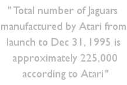

|
The following information is
from SEC (Securities and Exchange Commission) filings
during the time when Atari was officially "merging" with
JTS the hard-disk drive manufacturer in 1996.
Atari gives a rare insight into its sales figures and
internal operations through these official documents and
we can conclude how many Jaguars were manufactured by
Atari approximately.

The following factors
should be considered carefully in evaluating the
proposals to be voted on at the Atari Special Meeting
and the JTS Special Meeting. For periods following the
Merger, references to the products, business, results of
operations or financial condition of JTS should be
considered to refer to JTS and Atari, unless the context
otherwise requires.
RISK FACTORS RELATED TO THE
BUSINESS OF ATARI
Significant Operating
Losses. Disappointing Sales of Jaguar Products.
Atari has incurred significant operating losses for the
past five fiscal years. Most recently, Atari incurred an
operating loss of $53.7 million for fiscal 1995 and
$24.0 million for fiscal 1994. Over the past several
years, Atari has undergone significant change. In 1992
and 1993, Atari significantly downsized its operations,
decided to exit the computer products business and
focused its efforts on its video game business. While
restructuring, Atari developed its 64-bit Jaguar
interactive multimedia entertainment system, which was
introduced in the fourth quarter of 1993. For 1995 and
1994, net sales of Jaguar and related software and
accessories were $9.9 million and $29.3 million,
respectively, and were substantially below Atari's
expectations. Atari attributes the poor performance of
Jaguar products to a number of factors including:
(i) extensive delays in
development of software for Jaguar which resulted in
reduced orders due to consumer concern as to when titles
for the platform would be released and how many titles
would ultimately be available, and
(ii) the introduction of competing products by
Sega Enterprises, Ltd. ("Sega") and Sony Corporation
("Sony") in May 1995 and September 1995, respectively.
Due to disappointing sales and competitive pricing
pressures, Atari reduced the suggested retail price of
the Jaguar console from its original price of $249.99 to
its current price of $99.99.
As a result of Jaguar price
reductions, the substantial curtailment of sales and
marketing activities for the Jaguar and the substantial
curtailment of efforts by Atari and independent software
developers to develop additional software titles for the
Jaguar, Atari expects sales of Jaguar and related
products to decline substantially in 1996 and
thereafter.
The failure of Jaguar to
achieve commercial acceptance has had a severe financial
impact on Atari. In this regard, Atari reported a net
loss of $49.6 million for 1995 compared to net income of
$9.4 million in 1994, and Atari's net revenues declined
from $38.7 million in 1994 to $14.6 million in
1995. Accelerated amortization and write-offs of
software development costs in the amount of $16.6
million and inventory write-downs of $12.6 million
contributed significantly to the 1995 loss. The net loss
for the first quarter of 1996 was $800,000 compared to a
net loss of $4.4 million for the first quarter of 1995
and Atari's net revenues declined from $4.9 million for
the first quarter of 1995 to $1.3 million for the
comparable period in 1996.
The net loss in the first
quarter of 1996 was impacted by the $6.3 million gain
from sale of marketable securities offset by a $5.0
million inventory write-down in the quarter. In response
to these losses, the number of employees at Atari was
reduced from 101 at December 31, 1994 to 73 at December
31, 1995 and to 31 at March 31, 1996. In addition to
reductions in the Atari workforce, this downsizing
resulted in significant curtailment of research and
development and sales and marketing activities for
Jaguar and related products. Accordingly, Atari has
decided to focus its efforts on selling its inventory of
Jaguar and related products and to emphasize its
existing licensing and development activities related to
multimedia entertainment software for various platforms.
Risk of Additional Inventory Write-Downs. From
the introduction of Jaguar in late 1993 through May
1996, Atari sold approximately 135,000 units of Jaguar.

As of December 31, 1995, Atari
had approximately 100,000 units of Jaguar in inventory
and the value of Jaguar inventory and related software
was approximately $9.9 million. Due to disappointing
sales of Jaguar and increased competition from products
introduced by Sega and Sony, Atari reduced the suggested
retail price of Jaguar to $99.99 and recorded an
inventory write-down of $12.6 million in 1995.
Despite the introduction of
four additional game titles in the first quarter of
1996, sales of Jaguar and related software have remained
disappointing due to uncertainty about Atari's
commitment to the Jaguar platform, increased price
competition and pending competitive product
introductions. As a result of continued disappointing
sales, management revised estimates and wrote-down
inventory by an additional $5.0 million in the first
quarter of 1996. As of the end of May 1996, Atari had
approximately 90,000 units of Jaguar in inventory.
Volume sales of Jaguar and
related software in 1996 have consisted primarily of a
large order from a new European customer. Atari is also
pursuing wholesale sales channels in the U.S. as well as
licensing opportunities. There can be no assurance that
Atari's substantial unsold inventory of Jaguar and
related software can be sold at current or reduced
prices, if at all. In addition, any further decrease in
the value of such inventory could result in additional
inventory write-downs by Atari.
Risk of Potential
Liabilities. In connection with the restructuring of
Atari's business in 1992 and 1993 and Atari's decision
in late 1995 to significantly downsize its Jaguar
operations, Atari has terminated and plans to terminate
numerous contracts and business relationships, including
several related to software development activities.
Although Atari does not regard any of such contracts or
business relationships as material, the termination of
contracts and relationships has, from time to time,
resulted in litigation, diverting management and
financial resources. There can be no assurance that the
parties to such contracts will not commence or threaten
to commence litigation related to such contracts. Any
such litigation or threatened litigation would further
divert management and financial resources and could have
a material adverse effect on Atari's business, operating
results and financial condition.
In addition, Atari holds
several properties for sale, some of which are currently
being leased. The ownership and use of such properties
subjects Atari to numerous risks, including risks of
environmental and personal injury liabilities. Although
Atari is attempting to sell certain of such properties,
such sales are not expected to eliminate all the risks
associated with Atari's ownership of such properties,
including potential environmental liabilities and
ongoing indemnification and other contractual
obligations. At present, Atari has no such
indemnification obligations and is not aware of any such
environmental liability.
Intellectual Property.
Atari has exclusive use of its "Atari" name and "Fuji"
logo in all areas other than coin-operated arcade video
game use. Atari also has a portfolio of other
intellectual properties including patents, trademarks,
and copyrights associated with its video game and
computer businesses. Atari believes its patents,
trademarks and other intellectual property are important
assets.
As of May 31, 1996, Atari held
over 150 patents in the United States and other
jurisdictions which expire from 1996 to 2010 and had
applications pending for three additional patents. There
can be no assurance that any of these patent rights will
be upheld in the future or that Atari will be able to
preserve any of its other intellectual property rights.
Atari has in the past received communications from third
parties asserting rights to certain of its intellectual
property.
Atari has also been involved
in several major lawsuits regarding its intellectual
property, including a suit with Nintendo of America,
Inc. and its affiliates ("Nintendo.") which was settled
in March 1994 and a suit with Sega which was settled in
September 1994. In the event any third party were to
make a valid claim with respect to Atari's intellectual
property and a license were not available on
commercially reasonable terms, Atari's business,
financial condition and results of operations would be
materially and adversely affected. Litigation, which has
in the past resulted and could in the future result in
substantial costs and diversion of resources, may also
be necessary to enforce Atari's patents or other
intellectual property rights or to defend against third
party infringement claims. The occurrence of litigation
relating to patent infringement or other intellectual
property matters, regardless of the outcome, could have
a material adverse effect on Atari's business, financial
condition and results of operations.
Competition. The video
game business is intensely competitive. Since its
introduction in late 1993, the Jaguar, Atari's principal
product, has failed to achieve broad market acceptance.
Atari does not expect that the Jaguar, even at its
substantially reduced price, will ever become a broadly
accepted video game console, or that Jaguar technology
will be broadly adopted by software title developers.
The video game industry is also characterized by
unpredictable and rapid shifts in the popularity of
certain platforms, by severe price competition, and by
frequent new technology and product introductions. In
this regard, numerous companies have introduced or have
developed and are expected to introduce video game
consoles that are or may become competitive with Jaguar.
In addition, an increasing number of entertainment
titles are being developed for or ported to the PC
platform. Most of Atari's competitors have greater
experience and expertise in 3D graphics and multimedia
technology and have substantially greater engineering,
marketing and financial resources than Atari. |